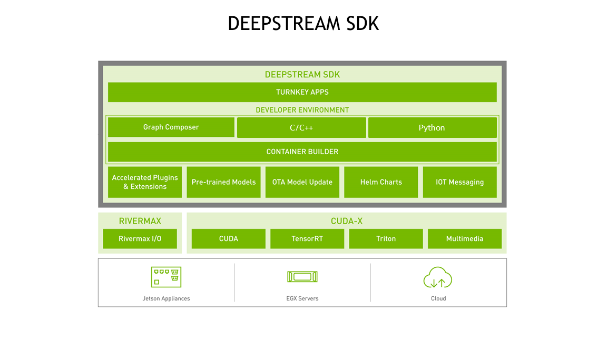
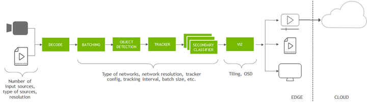

DeepStream
DeepStream 是一个流分析工具包，用于构建人工智能驱动的应用程序。 它将来自 USB/CSI 摄像头的流数据、来自文件的视频或通过 RTSP 的流作为输入，并使用人工智能和计算机视觉从像素中生成见解，以便更好地了解环境。 DeepStream SDK 可以成为许多视频分析解决方案的基础层，例如了解智慧城市中的交通和行人、医院中的健康和安全监控、零售业中的自助结账和分析、检测制造工厂中的组件缺陷等.

DeepStream是NVIDIA基于GStreamer的插件系统开发的, 继承了GStreamer的特性。DeepSream提供超过15种以上的GStreamer插件模块, 以此建造一个高效的视频分析管道（Pipeline）。
NVIDIA将 TensorRT, cuDNN, CUDA, Video SDK 等以插件的形式集成进 GStreamer 当中, 以管道的形式进行智能视频分析应用的开发, 将各个功能封装成组件, 通过将对应功能的组件插入管道中, 启动管道使数据按照要求在管道内流动, 数据经过解析、编解码、预处理、算法处理后进行图像渲染或者发送到云端。
例如
nvv4l2decoder 用于调用 GPU 硬件加速解码 h264 文件 （解码帧的格式是 NV12（YUV420））
nvstreammux 用于把输入按照参数处理成一系列的视频帧
nvinfer 通过推理的配置文件对输入图像进行推理
nvvideoconvert 视频颜色格式转换
nvdsosd 处理 RGBA buffer 绘制 ROI 等 识别对象的 Bounding Box, 边框, 以及识别对象的文字标签（字体、颜色、标示框）
nvegltransform 转换成 EGLImage instance 给nveglglessink使用
nveglglessink 渲染
DeepStream Graph Architecture
DeepStream is an optimized graph architecture built using the open source GStreamer framework. . The graph below shows a typical video analytic application starting from input video to outputting insights. All the individual blocks are various plugins that are used. At the bottom are the different hardware engines that are utilized throughout the application. Optimum memory management with zero-memory copy between plugins and the use of various accelerators ensure the highest performance.
DeepStream是使用开源 GStreamer 框架构建的优化的图架构。 下图显示了从输入视频到输出见解的典型视频分析应用程序。 所有单独的块都是使用的各种插件。 底部是整个应用程序中使用的不同硬件引擎。 插件之间零内存复制的最佳内存管理以及各种加速器的使用确保了最高性能。

DeepStream 以 GStreamer 插件的形式提供构建块，可用于构建高效的视频分析管道。 有超过 20 个针对各种任务进行硬件加速的插件。
Streaming data can come over the network through RTSP or from a local file system or from a camera directly. The streams are captured using the CPU. Once the frames are in the memory, they are sent for decoding using the NVDEC accelerator. The plugin for decode is called
Gst-nvvideo4linux2.After decoding, there is an optional image pre-processing step where the input image can be pre-processed before inference. The pre-processing can be image dewarping or color space conversion.
Gst-nvdewarperplugin can dewarp the image from a fisheye or 360 degree camera.Gst-nvvideoconvertplugin can perform color format conversion on the frame. These plugins use GPU or VIC (vision image compositor).The next step is to batch the frames for optimal inference performance. Batching is done using the
Gst-nvstreammuxplugin.Once frames are batched, it is sent for inference. The inference can be done using TensorRT, NVIDIA’s inference accelerator runtime or can be done in the native framework such as TensorFlow or PyTorch using Triton inference server. Native TensorRT inference is performed using
Gst-nvinferplugin and inference using Triton is done usingGst-nvinferserverplugin. The inference can use the GPU or DLA (Deep Learning accelerator) for Jetson AGX Orin and Orin NX.After inference, the next step could involve tracking the object. There are several built-in reference trackers in the SDK, ranging from high performance to high accuracy. Object tracking is performed using the
Gst-nvtrackerplugin.For creating visualization artifacts such as bounding boxes, segmentation masks, labels there is a visualization plugin called
Gst-nvdsosd.Finally to output the results, DeepStream presents various options: render the output with the bounding boxes on the screen, save the output to the local disk, stream out over RTSP or just send the metadata to the cloud. For sending metadata to the cloud, DeepStream uses
Gst-nvmsgconvandGst-nvmsgbrokerplugin. Gst-nvmsgconv converts the metadata into schema payload and Gst-nvmsgbroker establishes the connection to the cloud and sends the telemetry data. There are several built-in broker protocols such as Kafka, MQTT, AMQP and Azure IoT. Custom broker adapters can be created.
DeepStream reference app
To get started, developers can use the provided reference applications. Also included are the source code for these applications.
The end-to-end application is called deepstream-app. This app is fully configurable - it allows users to configure any type and number of sources.
Users can also select the type of networks to run inference.
It comes pre-built with an inference plugin to do object detection cascaded by inference plugins to do image classification. There is an option to configure a tracker.
For the output, users can select between rendering on screen, saving the output file, or streaming the video out over RTSP.

Reference
https://resources.nvidia.com/en-us-deepstream-get-started-with-c-cpp